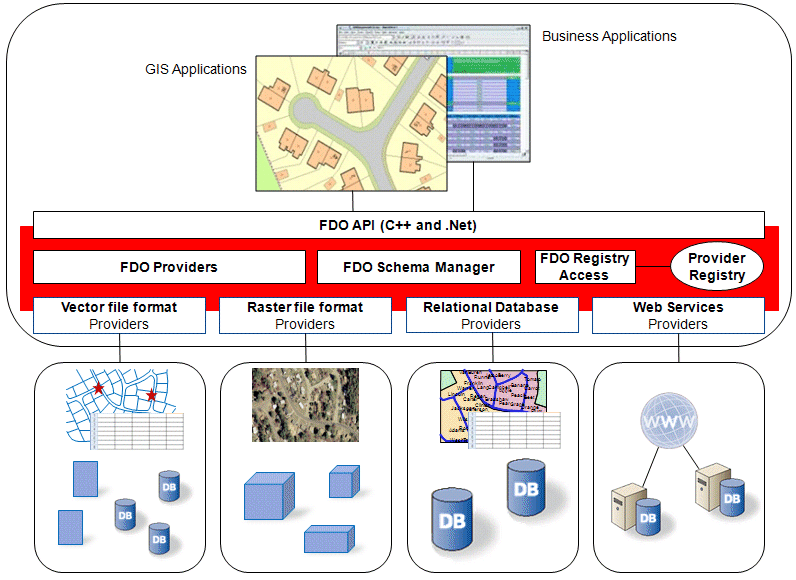

FDO Concepts¶
FDO Toolbox is a GUI frontend to the FDO API. To best understand how to use FDO Toolbox, it helps to understand the concepts behind FDO.
Most of the information here can be found on the FDO Developer’s Guide, which explains the concepts in greater depth.
About FDO¶
The FDO API provides a common, general purpose abstraction layer for accessing geospatial data from a variety of data sources. The API is, in part, an interface specification of the abstraction layer. A provider, such as OSGeo FDO Provider for MySQL, is an implementation of the interface for a specific type of data source (for example, for a MySQL relational database). The API supports the standard data store manipulation operations, such as querying, updating, versioning, locking, and others. It also supports analysis.
The API includes an extensive set of methods that return information about the capabilities of the underlying data source. For example, one method indicates whether the data source supports the creation of multiple schemas, and another indicates whether the data source supports schema modification.
A core set of services for providers is also available in the API, such as provider registration, schema management, filter and expression construction, and XML serialization and deserialization.
The API uses an object-oriented model for the construction of feature schema. A feature is a class, and its attributes, including its geometry, are a property of the class. The instantiation of a feature class, a Feature Data Object (FDO), can contain other FDOs.
FDO Providers¶
A FDO provider is a specific implementation of the FDO API that provides access to data stored in a particular data source technology. For example:
- The MySQL provider provides access to GIS data stored in a MySQL database
- The SHP provider access to GIS data stored in a SHP file.
The extent to which a provider implements the FDO API is limited to by the native capabilities of the underlying data source technologies. See Capabilities for more information.
Feature Schemas¶
A schema is a logical description of the data types used to model real-world
objects. A schema is not the actual data instances (that is, not a particular
road or land parcel), rather it is metadata. A schema is a model of the types
of data that would be found in a data store. For example, a schema which
models the layout of city streets has a class called Road, and this class has a
property called Name. The definition of Road and its associated classes
constitute the schema.
A schema consists of a collection of schema elements. In the FDO API, schema
elements are related to one another by derivation and by aggregation. An
element of a schema defines a particular type of data, such as a feature class
or a property, or an association. For example, a feature class definition for a
road includes the class name (for example, Road), and the class properties (for
example, Name, NumberLanes, PavementType, and Geometry).
Feature Classes¶
A feature class is a schema element that describes a type of real-world object. It includes a class name and property definitions, including zero or more geometric properties. It describes the type of data that would be included in object instances of that type.
Schema Mappings¶
A Schema Mapping is a correspondence between a Schema Element and a physical object in a data store. For example, OSGeo FDO Provider for MySQL maps each Feature Class onto a table in the MySQL database where the data store resides. The physical structure of data stores for each FDO provider can vary greatly, so the types of Schema Mappings can also vary between providers. Each provider defines a set of default schema mappings. For example, OSGeo FDO Provider for MySQL maps a class to a table of the same name by default. These defaults can be overridden by specifying Schema Overrides.
Properties¶
A property is a single attribute of a class and a class is defined by one or more
property definitions. For example, a Road feature class may have properties
called Name, NumberLanes, or Location. A property has a particular type,
which can be a simple type, such as a string or number, or a complex type
defined by a class, such as an Address type, which itself is defined by a set of
properties, such as StreetNumber, StreetName, or StreetType.
There are five kinds of properties: association properties, data properties, geometric properties, object properties, and raster properties.
Association Properties
The FdoAssociationPropertyDefinition class is used to model a peer-to-peer
relationship between two classes. This relationship is defined at schema
creation time and instantiated at object creation time. The association property
supports various cardinality settings, cascading locks, and differing delete
rules. An FDO filter can be based on association properties and FdoIFeatureReader can handle associated objects through the GetObject()
method.
Data Properties
A data property is a non-spatial property. An instance of a data property contains a value whose type is either boolean, byte, date/time, decimal, single, double, Int16, Int32, Int64, string, binary large object, or character large object.
Geometric Properties
An instance of a geometric property contains an object that represents a geometry value. The definition of the geometric property may restrict an object to represent a geometry that always has the same shape, such as a point, or it could allow different object instances to have different dimensions. For example, one geometric property object could represent a point and another could represent a line. Any combination of shapes is permissible in the specification of the geometric types that a geometry property definition permits. The default geometric property specifies that an object could represent a geometry that is any one of the four shapes.
With respect to ordinate dimensionality, all instances of a geometric property must have the same ordinate dimension. The default is XY.
Geometric property definitions have two attributes regarding ordinate
dimensionality: HasElevation for Z and HasMeasure for M.
Object Properties
An object property is a complex property type that can be used within a class, and an object property, itself, is defined by a class definition. For example, the Address type example described previously in the Property definition. An object property may define a single instance for each class object instance (for example, an address property of a land parcel), or may represent a list of instances of that class type per instance of the owning class (for example, inspection records as a complex property of an electrical device feature class).
Raster Properties
A raster property defines the information needed to process a raster image, for example, the number of bits of information per pixel, the size in pixels of the X dimension, and the size in pixels of the Y dimension, needed to process a raster image.
Data Stores¶
A data store is a repository of an integrated set of objects. The objects in a data
store are modeled either by classes or feature classes defined within one or
more schemas. For example, a data store may contain data for both a LandUse
schema and a TelcoOutsidePlant schema. Some data stores can represent data
in only one schema, while other data stores can represent data in many
schemas (for example, RDBMS-based data stores, such as MySQL).
Capabilities¶
The FDO Capabilities API allows client applications to determine the capabilities and features supported by a given FDO provider.
FDO Toolbox uses the capabilities API to selectively enable/disable certain commands based on the provider’s support. For example,
the FDO Toolbox Delete Schema command will be disabled if the underlying provider does not support the IDestroySchema FDO command.
Spatial Contexts¶
A spatial context describes the general metadata or parameters within which geometry for a collection of features resides. In particular, the spatial context includes the definition of the coordinate system, spheroid parameters, units, spatial extents, and so on for a collection of geometries owned by features.
Spatial context can be described as the “coordinate system plus identity.” Any geometries that are to be spatially related must be in a common spatial context.
The identity component is required in order to support separate workspaces, such as schematic diagrams, which are non-georeferenced. Also, it supports georeferenced cases. For example, two users might create drawings using some default spatial parameters (for example, rectangular and 10,000x10,000), although each drawing had nothing to do with the other. If the drawings were put into a common database, the users could preserve not only the spatial parameters, but also the container aspect of their data, using spatial context.